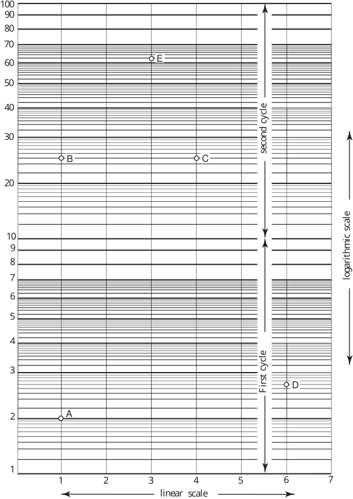

Long description: workbook6block5fig3

Alt text: A graph comparing measurements across a linear scale, a logarithmic scale, and sequential cycles labeled First cycle and second cycle.
This description was generated by AI and has not been verified by a human. If you spot an error, please use the feedback link below.
- The visualization is a comparative graph structured with three primary dimensions: the horizontal axis labeled "linear scale," the vertical axis labeled "logarithmic scale," and two sectional groupings labeled "First cycle" and "second cycle."
- The horizontal axis ranges from approximately 1 to 7, representing values on the linear scale.
- The vertical axis shows labeled intervals corresponding to the logarithmic scale, ranging from 1 to 100, with major tick marks every 10 units.
- Within the lower section, labeled "First cycle," data points A, B, C, and D are marked.
- Point A is located near the left side of the graph, at a low reading on the logarithmic scale.
- Point B is positioned in the middle-left section, higher up on the logarithmic scale than point A.
- Point C is located further to the right than point B, at a similar height on the logarithmic scale to point B.
- Point D is situated toward the right side of the graph in the "First cycle" area, at a low reading on the logarithmic scale.
- The upper section, labeled "second cycle," contains point E, which is marked toward the center-right of the graph at a high reading on the logarithmic scale.